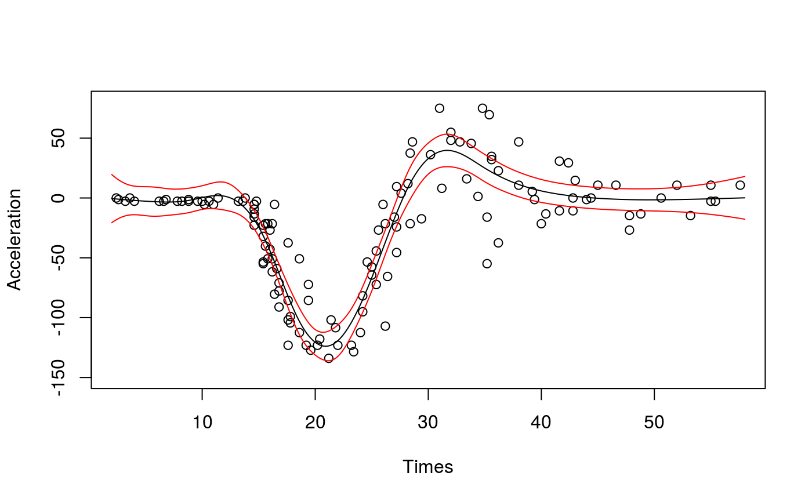

qgam.RdThis function fits a smooth additive regression model for a single quantile.
qgam(form, data, qu, lsig = NULL, err = NULL, multicore = !is.null(cluster), cluster = NULL, ncores = detectCores() - 1, paropts = list(), control = list(), argGam = NULL)
| form | A GAM formula, or a list of formulae. See ?mgcv::gam details. |
|---|---|
| data | A data frame or list containing the model response variable and covariates required by the formula. By default the variables are taken from environment(formula): typically the environment from which gam is called. |
| qu | The quantile of interest. Should be in (0, 1). |
| lsig | The value of the log learning rate used to create the Gibbs posterior. By defauls |
| err | An upper bound on the error of the estimated quantile curve. Should be in (0, 1).
Since qgam v1.3 it is selected automatically, using the methods of Fasiolo et al. (2017).
The old default was |
| multicore | If TRUE the calibration will happen in parallel. |
| cluster | An object of class |
| ncores | Number of cores used. Relevant if |
| paropts | a list of additional options passed into the foreach function when parallel computation is enabled. This is important if (for example) your code relies on external data or packages: use the .export and .packages arguments to supply them so that all cluster nodes have the correct environment set up for computing. |
| control | A list of control parameters. The only one relevant here is |
| argGam | A list of parameters to be passed to |
| ... | additional arguments passed to |
A gamObject. See ?gamObject.
Fasiolo, M., Goude, Y., Nedellec, R. and Wood, S. N. (2017). Fast calibrated additive quantile regression. Available at https://arxiv.org/abs/1707.03307.
##### # Univariate "car" example #### library(qgam); library(MASS) # Fit for quantile 0.5 using the best sigma set.seed(6436) fit <- qgam(accel~s(times, k=20, bs="ad"), data = mcycle, qu = 0.5)#> Estimating learning rate. Each dot corresponds to a loss evaluation. #> qu = 0.5............done# Plot the fit xSeq <- data.frame(cbind("accel" = rep(0, 1e3), "times" = seq(2, 58, length.out = 1e3))) pred <- predict(fit, newdata = xSeq, se=TRUE) plot(mcycle$times, mcycle$accel, xlab = "Times", ylab = "Acceleration", ylim = c(-150, 80))# NOT RUN { # You can get a better fit by letting the learning rate change with "accel" # For instance fit <- qgam(list(accel ~ s(times, k=20, bs="ad"), ~ s(times)), data = mcycle, qu = 0.8) pred <- predict(fit, newdata = xSeq, se=TRUE) plot(mcycle$times, mcycle$accel, xlab = "Times", ylab = "Acceleration", ylim = c(-150, 80)) lines(xSeq$times, pred$fit, lwd = 1) lines(xSeq$times, pred$fit + 2*pred$se.fit, lwd = 1, col = 2) lines(xSeq$times, pred$fit - 2*pred$se.fit, lwd = 1, col = 2) # }##### # Multivariate Gaussian example #### library(qgam) set.seed(2) dat <- gamSim(1,n=400,dist="normal",scale=2)#> Gu & Wahba 4 term additive modelfit <- qgam(y~s(x0)+s(x1)+s(x2)+s(x3), data=dat, qu = 0.5)#> Estimating learning rate. Each dot corresponds to a loss evaluation. #> qu = 0.5........done###### # Heteroscedastic example ####### NOT RUN { set.seed(651) n <- 2000 x <- seq(-4, 3, length.out = n) X <- cbind(1, x, x^2) beta <- c(0, 1, 1) sigma = 1.2 + sin(2*x) f <- drop(X %*% beta) dat <- f + rnorm(n, 0, sigma) dataf <- data.frame(cbind(dat, x)) names(dataf) <- c("y", "x") fit <- qgam(list(y~s(x, k = 30, bs = "cr"), ~ s(x, k = 30, bs = "cr")), data = dataf, qu = 0.95) plot(x, dat, col = "grey", ylab = "y") tmp <- predict(fit, se = TRUE) lines(x, tmp$fit) lines(x, tmp$fit + 2 * tmp$se.fit, col = 2) lines(x, tmp$fit - 2 * tmp$se.fit, col = 2) # }